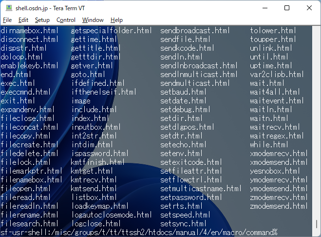

You can change the look and feel of Tera Term by using transparent window and theme. Transparent window and theme can be used at the same time.
Tera Term window can make transparent. The transparent window is available on Windows 2000 or later.
Settings can change on Visual tab of [Setup] - [Additional settings].
Transparency can be specified as a value from 0 to 255.
Smaller values are transparent, and opacity is 255. The default value is 255.
Transparency can be specified for the active and inactive windows.
Rotate the wheel on the taskbar to change the transparency temporarily.
Theme can change the background image and text color at once.
Theme settings are made on theme tab in [Setup] Additional settings.
Tera Term can display a desktop image (Windows background image) or a specified image as the background. The desktop image and the specified image can be blended.
Theme/BG(background) is a replacement of Eterm lookfeel in Tera Term 4. Eterm(GitHub) is a vt102 terminal emulator intended to replace xterm.
Displays a desktop image in the background of Tera Term.
Display specified image in the background of Tera Term. Images with alpha channel can also be used.

Displays a blended image of the desktop image and the specified image on background of Tera Term.

Color theme can change character and background color at once.